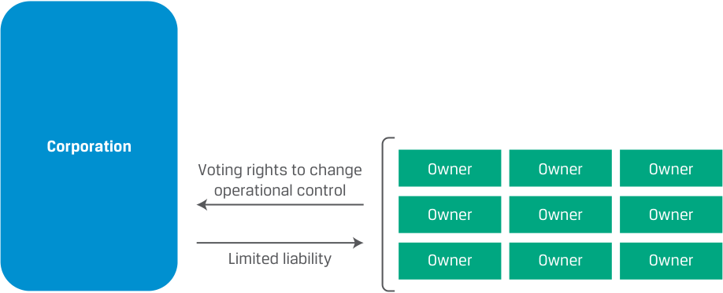
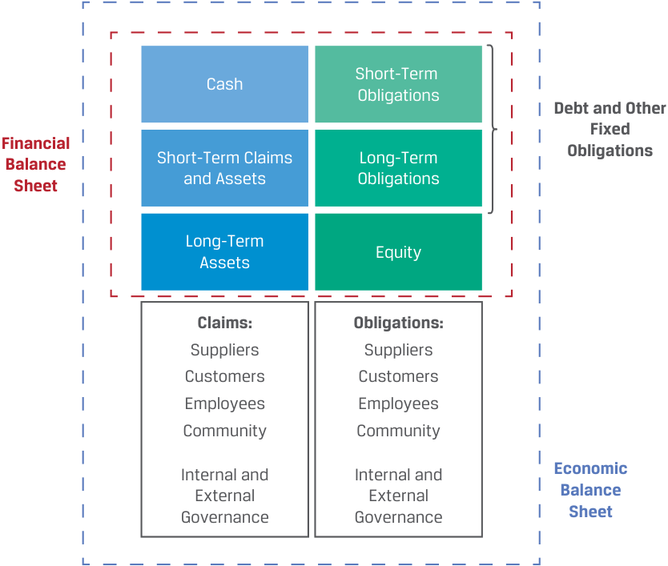
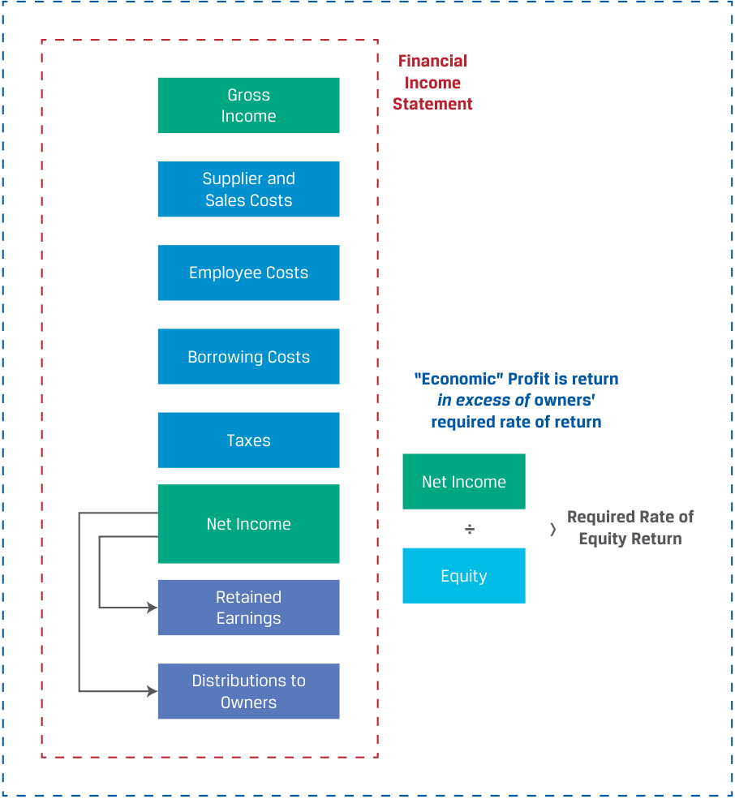

Learning Module 1 Organizational Forms, Corporate Issuer Features, and Ownership - Part 2: Key Features of Corporate Issuers
Volume 3: Corporate Issuers
Learning Module 1 Organizational Forms, Corporate Issuer Features, and Ownership
Part 2/3: Key Features of Corporate Issuers (PDF Pages 23–28)
Tập 3: Tổ chức phát hành doanh nghiệp (Corporate Issuers)
Học phần 1: Các hình thức tổ chức doanh nghiệp, đặc điểm của tổ chức phát hành doanh nghiệp và quyền sở hữu (Organizational Forms, Corporate Issuer Features, and Ownership)
Phần 2/3: Các đặc điểm chính của tổ chức phát hành doanh nghiệp (Key Features of Corporate Issuers) (Trang PDF 23–28)
- True or False: Partnerships are typically taxed at the entity level rather than at the individual partner level.
-
A. True
-
B. False
- Đúng hay Sai: Các công ty hợp danh (partnerships) thường bị đánh thuế ở cấp độ thực thể (entity level) thay vì ở cấp độ từng thành viên hợp danh cá nhân (individual partner level).
- A. Đúng
- B. Sai
Solution:
Lời giải:
B is correct. Partnerships are typically pass-through entities, meaning that business income earned by the partnership is passed through to the partners according to the terms of partnership agreement, and each partner is taxed at the personal level.
B là đáp án đúng. Các công ty hợp danh thường là các thực thể chuyển tiếp thuế (pass-through entities), nghĩa là thu nhập kinh doanh do công ty hợp danh tạo ra được chuyển tiếp sang cho các thành viên hợp danh theo các điều khoản của thỏa thuận hợp danh, và mỗi thành viên hợp danh sẽ chịu thuế ở cấp độ cá nhân.
KEY FEATURES OF CORPORATE ISSUERS 3
CÁC ĐẶC ĐIỂM CHÍNH CỦA TỔ CHỨC PHÁT HÀNH DOANH NGHIỆP (KEY FEATURES OF CORPORATE ISSUERS) 3
describe key features of corporate issuers
- Mô tả các đặc điểm chính của tổ chức phát hành doanh nghiệp (describe key features of corporate issuers)
The prior lesson addressed several advantages of the corporate organizational form over others, such as limited owner liability, owner–manager separation, and improved access to external financing. In this lesson, we explore the features of corporations in greater depth. Corporations that raise capital in the financial markets, known as corporate issuers , are essential for financial analysts to understand, because they raise more capital from investors than even governments worldwide.
Bài học trước đã đề cập đến một số lợi thế của hình thức tổ chức công ty cổ phần (corporate organizational form) so với các hình thức khác, chẳng hạn như trách nhiệm hữu hạn của chủ sở hữu, sự tách biệt giữa chủ sở hữu và người quản lý, và khả năng tiếp cận nguồn tài trợ bên ngoài tốt hơn. Trong bài học này, chúng ta sẽ khám phá sâu hơn các đặc điểm của công ty cổ phần. Các công ty cổ phần huy động vốn trên thị trường tài chính, được gọi là tổ chức phát hành doanh nghiệp (corporate issuers), là đối tượng thiết yếu mà các chuyên gia phân tích tài chính cần phải hiểu rõ, bởi vì họ huy động nhiều vốn từ các nhà đầu tư hơn cả các chính phủ trên toàn thế giới.
Legal Identity
Tư cách pháp nhân (Legal Identity)
A corporation is a legal entity separate and distinct from its owners formed through the filing of articles of incorporation with a regulatory authority. Corporations share many of the rights and responsibilities of an individual and may engage in similar activities. For example, a corporation can enter into contracts, hire employees, sue and be sued, borrow and lend money, make investments, and pay taxes.
Công ty cổ phần (corporation) là một thực thể pháp lý riêng biệt và tách bạch khỏi các chủ sở hữu của nó, được thành lập thông qua việc nộp điều lệ công ty (articles of incorporation) cho cơ quan quản lý có thẩm quyền. Các công ty cổ phần có nhiều quyền và nghĩa vụ tương tự như một cá nhân và có thể tham gia vào các hoạt động tương tự. Ví dụ, một công ty cổ phần có thể giao kết hợp đồng, tuyển dụng nhân viên, khởi kiện và bị kiện, đi vay và cho vay tiền, thực hiện đầu tư và nộp thuế.
Large corporations frequently have business operations in many different geographic regions and are subject to each regulatory jurisdiction where
Các công ty cổ phần lớn thường có hoạt động kinh doanh tại nhiều khu vực địa lý khác nhau và phải tuân thủ từng khu vực pháp lý quản lý nơi mà:
-
the company is incorporated,
-
the business is conducted, and
-
the company finances itself
- công ty được đăng ký thành lập (incorporated),
- hoạt động kinh doanh được tiến hành, và
- công ty huy động vốn tài trợ cho chính mình,
and for such activities as
và đối với các hoạt động như:
-
registration,
-
financial and non-financial reporting and disclosure, and
-
capital market activities (issuance, trading, investment).
- đăng ký kinh doanh (registration),
- báo cáo và công bố thông tin tài chính và phi tài chính (financial and non-financial reporting and disclosure), và
- các hoạt động trên thị trường vốn (phát hành, giao dịch, đầu tư).
Owner–Manager Separation
Sự tách biệt giữa Chủ sở hữu và Người quản lý (Owner–Manager Separation)
A key feature of most corporations is the separation between those who own the business (the shareholders) and those who operate it, as represented by the board of directors and management. In a corporation, shareholders are largely removed from the
Một đặc điểm chính của hầu hết các công ty cổ phần là sự tách biệt giữa những người sở hữu doanh nghiệp (các cổ đông – shareholders) và những người điều hành doanh nghiệp, được đại diện bởi hội đồng quản trị (board of directors) và ban giám đốc (management). Trong một công ty cổ phần, các cổ đông phần lớn tách rời khỏi
day-to-day operations of the business. Instead, shareholders elect a board of directors that, in turn, appoints executive-level management, such as the chief executive officer, who is accountable for investing, financing, and operating decisions. Directors and managers have a primary responsibility to act in the best interest of shareholders and, indirectly, all stakeholders. The separation of ownership and management enables the corporation to obtain financing from a larger universe of potential investors who do not need (or want) to be involved in management.
các hoạt động thường nhật của doanh nghiệp. Thay vào đó, cổ đông bầu ra một hội đồng quản trị và đến lượt mình, hội đồng quản trị sẽ bổ nhiệm ban điều hành cấp cao (executive-level management), chẳng hạn như giám đốc điều hành (chief executive officer – CEO), người chịu trách nhiệm giải trình về các quyết định đầu tư, tài trợ và hoạt động kinh doanh. Các thành viên hội đồng quản trị và các nhà quản lý có trách nhiệm hàng đầu là hành động vì lợi ích tốt nhất của các cổ đông và, một cách gián tiếp, của tất cả các bên liên quan (stakeholders). Sự tách biệt giữa quyền sở hữu và quyền quản lý cho phép công ty cổ phần huy động được nguồn tài trợ từ một tập hợp rộng lớn hơn các nhà đầu tư tiềm năng – những người không cần (hoặc không muốn) tham gia vào công việc quản lý.
If a board or management does not act in shareholders’ best interests, shareholders can enact change through exercising voting rights attached to their shares—for example, by voting to replace the board of directors—though this can take time. Influencing operations or changing management outright using engagement and voting rights is a strategy pursued by some investors and will be discussed in detail in later lessons.
Nếu hội đồng quản trị hoặc ban giám đốc không hành động vì lợi ích tốt nhất của cổ đông, cổ đông có thể tạo ra sự thay đổi thông qua việc thực hiện quyền biểu quyết (voting rights) gắn liền với cổ phiếu của họ — ví dụ, bằng cách bỏ phiếu thay thế hội đồng quản trị — mặc dù việc này có thể mất thời gian. Việc gây ảnh hưởng đến hoạt động kinh doanh hoặc thay đổi hoàn toàn ban giám đốc bằng cách sử dụng hoạt động đối thoại gắn kết (engagement) và quyền biểu quyết là một chiến lược được một số nhà đầu tư theo đuổi và sẽ được thảo luận chi tiết trong các bài học sau.
Owner/Shareholder Liability
Trách nhiệm pháp lý của Chủ sở hữu/Cổ đông (Owner/Shareholder Liability)
Risk is shared among all shareholders, who face limited liability. That is, the maximum amount shareholders can lose is what they have invested in the company (i.e., the value of their shares can fall to zero but no further), and they are not responsible for the debts of the corporation unless they separately, specifically guarantee them.
Rủi ro được chia sẻ giữa tất cả các cổ đông, những người chỉ chịu trách nhiệm hữu hạn (limited liability). Nghĩa là, số tiền tối đa mà các cổ đông có thể mất chính là số tiền họ đã đầu tư vào công ty (tức là giá trị cổ phiếu của họ có thể giảm xuống bằng 0 nhưng không thể âm thêm nữa), và họ không phải chịu trách nhiệm về các khoản nợ của công ty cổ phần trừ khi họ có cam kết bảo lãnh riêng biệt và cụ thể cho các khoản nợ đó.
Shareholders share in the risk and return of the company in proportion to their share ownership unless the corporate charter specifies differently. Unlike partnerships, ownership units are divided into shares of smaller unit size, allowing investors to more easily purchase or sell ownership interests as represented by their shares. For example, some issuers have more than 1 billion shares outstanding, meaning that ownership interests are divided into extremely small increments. Additionally, some corporations issue multiple types or classes of shares with different risk and return characteristics, which will be discussed in a later lesson. Exhibit 7 shows the relationship between owners and the corporation.
Các cổ đông cùng chia sẻ rủi ro và lợi nhuận của công ty theo tỷ lệ sở hữu cổ phần của họ, trừ khi điều lệ công ty (corporate charter) có quy định khác. Không giống như công ty hợp danh, các đơn vị sở hữu được chia nhỏ thành các cổ phiếu có mệnh giá/quy mô đơn vị nhỏ hơn, cho phép các nhà đầu tư mua hoặc bán quyền sở hữu được đại diện bởi cổ phiếu của họ một cách dễ dàng hơn. Ví dụ, một số tổ chức phát hành có hơn 1 tỷ cổ phiếu đang lưu hành (shares outstanding), nghĩa là quyền sở hữu được chia thành những phần cực kỳ nhỏ. Ngoài ra, một số công ty cổ phần phát hành nhiều loại hoặc nhiều hạng cổ phiếu (classes of shares) với các đặc điểm rủi ro và tỷ suất sinh lợi khác nhau, sẽ được thảo luận trong một bài học sau. Bảng 7 (Exhibit 7) thể hiện mối quan hệ giữa các chủ sở hữu và công ty cổ phần.
Exhibit 7: Corporate Shareholder Liability
Bảng 7 (Exhibit 7): Trách nhiệm pháp lý của cổ đông công ty cổ phần (Corporate Shareholder Liability)

Chú thích hình ảnh: Giữa Công ty cổ phần (Corporation) và các Chủ sở hữu (Owner): Các chủ sở hữu có quyền biểu quyết để thay đổi quyền kiểm soát hoạt động (Voting rights to change operational control) và được hưởng chế độ trách nhiệm hữu hạn (Limited liability).
External Financing
Tài trợ từ bên ngoài (External Financing)
The separation between ownership and management allows corporations to access external financing more easily than other business structures because purchasing a share is the only requirement to become an owner. While more expensive to form and operate than other forms, the corporate form is typically preferred when capital needs
Sự tách biệt giữa quyền sở hữu và quyền quản lý cho phép các công ty cổ phần tiếp cận nguồn tài trợ bên ngoài (external financing) dễ dàng hơn so với các cấu trúc doanh nghiệp khác bởi vì việc mua một cổ phiếu là điều kiện duy nhất để trở thành chủ sở hữu. Mặc dù tốn kém hơn để thành lập và vận hành so với các hình thức khác, hình thức công ty cổ phần thường được ưa chuộng khi nhu cầu vốn
exceed what could be raised by an individual or small group of partners. Financing may be provided by individuals or by institutions, such as mutual funds, pension funds, banks, governments, non-profits, and other corporations.
vượt quá mức có thể huy động được bởi một cá nhân hoặc một nhóm nhỏ các thành viên hợp danh. Nguồn tài trợ có thể được cung cấp bởi các cá nhân hoặc bởi các tổ chức, chẳng hạn như quỹ tương hỗ (mutual funds), quỹ hưu trí (pension funds), ngân hàng, chính phủ, các tổ chức phi lợi nhuận và các công ty cổ phần khác.
Corporations are financed in two ways: with equity , by selling shares to investors or reinvesting profits, and with borrowings, or debt , in the form of loans, bonds, and leases. Equity investors (shareholders) have a right to receive any distributions of profits, known as dividends , while debt must be repaid on a pre-specified date in the future with interest. Equity or debt financing can be raised based on a private contractual agreement between an issuer and investors or in the form of a security , a standardized instrument that might be tradeable among investors on a public exchange, which will be covered in the next lesson.
Các công ty cổ phần được tài trợ theo hai cách: bằng vốn chủ sở hữu (equity), thông qua việc bán cổ phiếu cho nhà đầu tư hoặc tái đầu tư lợi nhuận, và bằng các khoản đi vay, hay nợ (debt), dưới hình thức các khoản vay (loans), trái phiếu (bonds) và hợp đồng thuê (leases). Các nhà đầu tư vốn chủ sở hữu (cổ đông) có quyền nhận bất kỳ khoản phân phối lợi nhuận nào, được gọi là cổ tức (dividends), trong khi nợ phải được hoàn trả vào một ngày xác định trước trong tương lai kèm theo tiền lãi. Tài trợ bằng vốn chủ sở hữu hoặc nợ có thể được huy động dựa trên một thỏa thuận hợp đồng tư nhân giữa tổ chức phát hành và các nhà đầu tư hoặc dưới hình thức một chứng khoán (security) – một công cụ được chuẩn hóa có thể giao dịch giữa các nhà đầu tư trên một sàn giao dịch đại chúng, nội dung này sẽ được đề cập trong bài học tiếp theo.
Exhibit 8 shows the relationship between debt and equity on a corporation’s balance sheet and how these are related to its assets.
Bảng 8 (Exhibit 8) thể hiện mối quan hệ giữa nợ và vốn chủ sở hữu trên bảng cân đối kế toán (balance sheet) của một công ty cổ phần và cách thức chúng liên kết với tài sản của công ty.
Exhibit 8: Financial and “Economic” Balance Sheet
Bảng 8 (Exhibit 8): Bảng cân đối kế toán Tài chính và “Kinh tế” (Financial and “Economic” Balance Sheet)

Chú thích hình ảnh: - Bảng cân đối kế toán Tài chính (Financial Balance Sheet - phía trên): Bên trái gồm Tiền mặt (Cash), Quyền đòi nợ và Tài sản ngắn hạn (Short-Term Claims and Assets), Tài sản dài hạn (Long-Term Assets). Bên phải gồm Nghĩa vụ nợ ngắn hạn (Short-Term Obligations), Nợ vay và các nghĩa vụ cố định dài hạn khác (Debt and Other Fixed Long-Term Obligations), và Vốn chủ sở hữu (Equity). - Bảng cân đối kế toán Kinh tế (Economic Balance Sheet - mở rộng phía dưới): Bổ sung thêm bên trái các Quyền lợi/Tài sản vô hình (Claims) đối với Nhà cung cấp (Suppliers), Khách hàng (Customers), Nhân viên (Employees), Cộng đồng (Community) và Quản trị nội bộ & bên ngoài (Internal and External Governance); bên phải bổ sung các Nghĩa vụ tương ứng (Obligations) đối với Nhà cung cấp, Khách hàng, Nhân viên, Cộng đồng và Quản trị nội bộ & bên ngoài.
While the “financial” balance sheet at the top of Exhibit 8 shows an issuer’s assets (left-hand side) and its sources of financing (right-hand side) from short term to long term measured in financial terms, other intangible or hard-to-quantify assets or liabilities of a firm, such as the human capital associated with its employees and supplier and customer relationships, are included on what may be referred to as an issuer’s broader “economic” balance sheet.
Trong khi bảng cân đối kế toán “tài chính” ở phía trên của Bảng 8 hiển thị các tài sản của tổ chức phát hành (bên trái) và các nguồn tài trợ của nó (bên phải) từ ngắn hạn đến dài hạn được đo lường bằng các thuật ngữ tài chính, thì các tài sản hoặc nợ phải trả vô hình (intangible) hoặc khó định lượng khác của doanh nghiệp, chẳng hạn như vốn nhân lực (human capital) gắn liền với nhân viên và các mối quan hệ với nhà cung cấp cũng như khách hàng, được đưa vào những gì có thể được gọi là bảng cân đối kế toán “kinh tế” (“economic” balance sheet) rộng hơn của tổ chức phát hành.
Similarly, Exhibit 9 shows an issuer’s income statement and distinguishes between its financial income or net income once fixed obligations have been met and its “economic” profit, or return to a firm’s owners in excess of what they could have earned elsewhere on different investments, known as their required rate of return on equity.
Tương tự, Bảng 9 (Exhibit 9) trình bày báo cáo kết quả hoạt động kinh doanh (income statement) của một tổ chức phát hành và phân biệt giữa thu nhập tài chính hay thu nhập ròng (net income) sau khi đã đáp ứng các nghĩa vụ cố định với lợi nhuận “kinh tế” (“economic” profit), tức là phần tỷ suất sinh lợi mang lại cho các chủ sở hữu doanh nghiệp vượt lên trên mức mà họ có thể kiếm được ở nơi khác từ các khoản đầu tư khác, được gọi là tỷ suất sinh lợi đòi hỏi trên vốn chủ sở hữu (required rate of return on equity).
Exhibit 9: Financial and “Economic” Income Statement
Bảng 9 (Exhibit 9): Báo cáo kết quả hoạt động kinh doanh Tài chính và “Kinh tế” (Financial and “Economic” Income Statement)

Chú thích hình ảnh: Báo cáo kết quả kinh doanh Tài chính (Financial Income Statement): Doanh thu (Sales) trừ đi Chi phí nhà cung cấp (Supplier Costs) tạo ra Lợi nhuận gộp (Gross Income); tiếp tục trừ đi Chi phí nhân viên (Employee Costs), Chi phí đi vay (Borrowing Costs) và Thuế (Taxes) để còn lại Thu nhập ròng (Net Income). Thu nhập ròng trên Vốn chủ sở hữu (Equity) được phân bổ vào Lợi nhuận giữ lại (Retained Earnings) hoặc Phân phối cho chủ sở hữu (Distributions to Owners). Lợi nhuận “Kinh tế” (“Economic” Profit) xuất hiện khi tỷ suất sinh lợi ($\text{Net Income} \div \text{Equity}$) vượt quá tỷ suất sinh lợi đòi hỏi của chủ sở hữu (Required Rate of Return).
Taxation
Thuế (Taxation)
While taxation for corporations can differ greatly from country to country, the corporation is ultimately subject to the tax authority and tax code governing the issuer’s tax reporting, payment, and status. In most countries, corporations are taxed on their profits. Taxable profits are usually not the same as profits reported on financial statements, because tax codes and accounting standards differ.
Mặc dù việc đánh thuế đối với các công ty cổ phần có thể rất khác nhau giữa các quốc gia, nhưng xét cho cùng, công ty cổ phần phải chịu sự điều chỉnh của cơ quan thuế và luật thuế quản lý việc báo cáo thuế, nộp thuế và tình trạng thuế của tổ chức phát hành. Ở hầu hết các quốc gia, công ty cổ phần bị đánh thuế trên lợi nhuận của họ. Lợi nhuận chịu thuế (taxable profits) thường không giống với lợi nhuận được báo cáo trên báo cáo tài chính, bởi vì luật thuế (tax codes) và chuẩn mực kế toán (accounting standards) có sự khác biệt.
In many countries, shareholders pay an additional tax on distributions (dividends) that are passed on to them. This is referred to as the double taxation of corporate profits. In some countries, shareholders do not pay a personal tax on dividends if the corporation has paid tax previously on the earnings distributed to shareholders or shareholders receive a personal tax credit for their proportional share of taxes paid by the corporation. In other countries, corporations pay no tax at all or may face different tax regimes within one country.
Ở nhiều quốc gia, cổ đông phải nộp thêm một khoản thuế đối với các khoản phân phối lợi nhuận (cổ tức) được chuyển cho họ. Điều này được gọi là việc đánh thuế hai lần (double taxation) đối với lợi nhuận của công ty cổ phần. Ở một số quốc gia, cổ đông không phải nộp thuế thu nhập cá nhân đối với cổ tức nếu công ty cổ phần trước đó đã nộp thuế đối với phần lợi nhuận phân phối cho cổ đông, hoặc cổ đông nhận được một khoản khấu trừ thuế cá nhân (personal tax credit) tương ứng với phần thuế mà công ty đã nộp theo tỷ lệ sở hữu của họ. Ở những quốc gia khác, các công ty cổ phần hoàn toàn không phải nộp thuế hoặc có thể phải đối mặt với các chế độ thuế khác nhau ngay trong cùng một quốc gia.
EXAMPLE 3
VÍ DỤ 3 (EXAMPLE 3)
Double Taxation of Corporate Profits
Đánh thuế hai lần đối với lợi nhuận công ty cổ phần (Double Taxation of Corporate Profits)
- The French retail giant Auchan Holding generated pre-tax income of €838 million last year and paid corporate taxes of €264 million. Investors in France also pay a 30% tax on dividends received. If Auchan had fully distributed its after-tax income to investors as a dividend and all its investors are in France, what is the total tax rate as a percentage of Auchan’s pre-tax income?
- Tập đoàn bán lẻ khổng lồ của Pháp Auchan Holding đã tạo ra thu nhập trước thuế là 838 triệu EUR vào năm ngoái và đã nộp thuế thu nhập doanh nghiệp là 264 triệu EUR. Các nhà đầu tư tại Pháp cũng phải nộp mức thuế 30% trên cổ tức nhận được. Nếu Auchan phân phối toàn bộ thu nhập sau thuế của mình cho các nhà đầu tư dưới dạng cổ tức và tất cả các nhà đầu tư của công ty đều ở Pháp, thì tổng thuế suất tính theo tỷ lệ phần trăm trên thu nhập trước thuế của Auchan là bao nhiêu?
Solution:
Lời giải:
| Pre-Tax Income | €838 |
|---|---|
| Corporate Taxes (31.5%) | €264 |
| After-Tax Income | €838 – €264 = €574 |
| Distributed Dividend | €574 |
| Investor Dividend Tax (30%) | €574 × 0.30 = €172.2 |
| Total Tax Rate | (€264 + €172.2)/€838 = 52.1% |
| Chỉ tiêu | Giá trị (triệu EUR) |
|---|---|
| Thu nhập trước thuế (Pre-Tax Income) | €838 |
| Thuế thu nhập doanh nghiệp (Corporate Taxes – 31,5%) | €264 |
| Thu nhập sau thuế (After-Tax Income) | $\text{€838} - \text{€264} = \text{€574}$ |
| Cổ tức được phân phối (Distributed Dividend) | €574 |
| Thuế cổ tức của nhà đầu tư (Investor Dividend Tax – 30%) | $\text{€574} \times 0,30 = \text{€172,2}$ |
| Tổng thuế suất (Total Tax Rate) | $(\text{€264} + \text{€172,2}) / \text{€838} = 52,1\%$ |
Nếu khoản thu nhập sau thuế 574 triệu EUR được chi trả cho các nhà đầu tư dưới dạng cổ tức, các nhà đầu tư sẽ phải nộp 172,2 triệu EUR tiền thuế cá nhân trên số cổ tức nhận được. Tổng số thuế phải nộp sẽ là 436,2 triệu EUR (264 triệu EUR ở cấp độ công ty cộng với 172,2 triệu EUR ở cấp độ cá nhân), dẫn đến tổng thuế suất thực tế là 52,1%.
If the after-tax income of €574 million were paid to investors as a dividend, investors would pay €172.2 million in personal taxes on the dividends received. Total taxes paid would be €436.2 million (€264 million at the corporate level plus €172.2 million at the personal level), resulting in a total tax rate of 52.1%.
Bất chấp bất lợi về thuế được minh họa trong ví dụ trên, hình thức công ty cổ phần vẫn giữ được sức hấp dẫn vì một số lý do. Trong khi các cổ đông của công ty cổ phần bị đánh thuế trên các khoản phân phối lợi nhuận, thì chủ doanh nghiệp tư nhân và các thành viên hợp danh thường bị đánh thuế trên toàn bộ lợi nhuận bất kể lợi nhuận đó có được phân phối dưới dạng cổ tức hay không (có một số ngoại lệ cho phép trích lập các quỹ dự trữ lợi nhuận). Sự khác biệt này làm cho cấu trúc công ty cổ phần trở nên hấp dẫn đối với các doanh nghiệp dự kiến tái đầu tư lợi nhuận chưa phân phối, chẳng hạn như để mở rộng công suất phục vụ tăng trưởng. Ngoài ra, tại các khu vực pháp lý nơi thuế suất thuế thu nhập doanh nghiệp thấp hơn thuế suất thuế thu nhập cá nhân, việc “lưu giữ” lợi nhuận lại trong doanh nghiệp có thể mang lại lợi thế.
Despite the tax disadvantage illustrated in the prior example, the corporate form remains attractive for several reasons. While corporate shareholders are taxed on distributions, sole proprietors and partners are often taxed on all profits regardless of whether they are distributed as dividends (exceptions exist with allowances for profit reserves). This difference makes the corporate structure attractive to businesses that expect to reinvest undistributed profits in, for example, additional capacity for growth. Also, in jurisdictions where corporate tax rates are lower than personal income tax rates, it can be advantageous to “store” profits in the business.
BỘ CÂU HỎI (QUESTION SET)
QUESTION SET
- Hãy giải thích tại sao sự tách biệt giữa quyền sở hữu và quyền quản lý lại cho phép các tổ chức phát hành doanh nghiệp có khả năng tiếp cận nguồn vốn lớn hơn.
- Explain why the separation of ownership from management allows for corporate issuers to have greater access to capital. Solution:
Lời giải:
By separating ownership from management responsibilities, corporations can attract a broad range of owners, especially individuals and institutions, who do not want to be involved in management but would like to participate as investors.
Bằng cách tách biệt quyền sở hữu khỏi trách nhiệm quản lý, các công ty cổ phần có thể thu hút một phạm vi rộng lớn các chủ sở hữu, đặc biệt là các cá nhân và tổ chức không muốn tham gia vào công việc quản lý nhưng muốn tham gia với tư cách là nhà đầu tư.
- Fill in the blanks in the following sentence:
- Điền vào chỗ trống trong câu sau:
Limited liability of shareholders refers to the fact that the __ amount shareholders may lose on their investment is the __ paid to buy the shares.
Trách nhiệm hữu hạn của cổ đông đề cập đến thực tế rằng số tiền __ mà cổ đông có thể mất từ khoản đầu tư của mình chính là __ đã trả để mua cổ phiếu.
Solution:
Lời giải:
Limited liability of shareholders refers to the fact that the maximum amount shareholders may lose on their investment is the price paid to buy the shares.
Trách nhiệm hữu hạn của cổ đông đề cập đến thực tế rằng số tiền tối đa (maximum) mà cổ đông có thể mất từ khoản đầu tư của mình chính là mức giá (price) đã trả để mua cổ phiếu.
- In which of the following situations does the double taxation of the corporate organizational form matter the least ?
-
A. The company expects to pay all its after-tax income as a dividend to shareholders each year.
-
B. The company’s shareholders reside in a tax jurisdiction with a high tax rate on dividend income.
-
C. The company is expecting to reinvest all its after-tax profits each year into growth of the business.
- Trong tình huống nào sau đây thì việc đánh thuế hai lần (double taxation) đối với hình thức tổ chức công ty cổ phần có ảnh hưởng ít quan trọng nhất?
- A. Công ty dự kiến chi trả toàn bộ thu nhập sau thuế của mình dưới dạng cổ tức cho cổ đông hàng năm.
- B. Các cổ đông của công ty cư trú tại một khu vực pháp lý về thuế có mức thuế suất cao đối với thu nhập từ cổ tức.
- C. Công ty dự kiến tái đầu tư toàn bộ lợi nhuận sau thuế hàng năm vào việc phát triển hoạt động kinh doanh.
Solution:
Lời giải:
C is correct. Reinvestment of all profits implies that the company pays no dividend to shareholders, and thus, no double taxation occurs.
C là đáp án đúng. Việc tái đầu tư toàn bộ lợi nhuận đồng nghĩa với việc công ty không trả cổ tức cho cổ đông, và do đó, việc đánh thuế hai lần không xảy ra.
A is incorrect. Double taxation occurs because dividend income is taxed at both the corporate level and the shareholders’ personal levels. If all after-tax profits are distributed, shareholders are taxed twice on the business’s income.
A sai. Việc đánh thuế hai lần xảy ra bởi vì thu nhập cổ tức bị đánh thuế ở cả cấp độ công ty và cấp độ cá nhân của cổ đông. Nếu toàn bộ lợi nhuận sau thuế được phân phối hết, cổ đông sẽ bị đánh thuế hai lần trên thu nhập của doanh nghiệp.
B is incorrect because a high tax rate on shareholders’ dividend income received would be a strong impetus to retain profits, find alternative means of distributing profits, or change the organizational form.
B sai vì mức thuế suất cao đối với thu nhập cổ tức mà cổ đông nhận được sẽ là động lực mạnh mẽ thúc đẩy công ty giữ lại lợi nhuận, tìm kiếm các phương thức phân phối lợi nhuận thay thế, hoặc thay đổi hình thức tổ chức.
- Referring to the Auchan Holding example in this lesson, calculate the amount of the tax disadvantage (in euros) Auchan has in its corporate form compared to if it were organized as a limited partnership. Recall that Auchan’s pre-tax profit was €838 million, the corporate tax rate was 31.5%, the personal income tax rate was 30%, and all after-tax profits were distributed.
- Tham chiếu đến ví dụ về Auchan Holding trong bài học này, hãy tính giá trị bất lợi về thuế (tính bằng đồng euro) mà Auchan phải chịu dưới hình thức công ty cổ phần so với trường hợp công ty được tổ chức dưới dạng một công ty hợp danh hữu hạn (limited partnership). Nhắc lại rằng lợi nhuận trước thuế của Auchan là 838 triệu EUR, thuế suất thuế thu nhập doanh nghiệp là 31,5%, thuế suất thuế thu nhập cá nhân là 30%, và toàn bộ lợi nhuận sau thuế đều được phân phối.
Solution:
Lời giải:
If Auchan were organized as a limited partnership, its pre-tax profit would be passed through to the owner(s) and taxes would only be paid at the personal level. Thus, total taxes paid would be €251.4 million (= €838 million × 0.30), or €184.8 million lower than total taxes paid under the corporate organizational form, and this tax of €251.4 million would be paid regardless of whether the partnership distributed the profit to partners.
Nếu Auchan được tổ chức dưới dạng một công ty hợp danh hữu hạn, lợi nhuận trước thuế của công ty sẽ được chuyển tiếp (passed through) sang cho (các) chủ sở hữu và thuế sẽ chỉ phải nộp ở cấp độ cá nhân. Do đó, tổng số thuế phải nộp sẽ là $251,4\text{ triệu EUR}$ ($= 838\text{ triệu EUR} \times 0,30$), thấp hơn $184,8\text{ triệu EUR}$ ($= 436,2 - 251,4$) so với tổng số thuế phải nộp dưới hình thức tổ chức công ty cổ phần, và khoản thuế $251,4\text{ triệu EUR}$ này sẽ phải nộp bất kể công ty hợp danh có phân phối lợi nhuận cho các thành viên hợp danh hay không.
- Corporate issuers are characterized by all of the following except :
-
A. Corporate income is taxed at both the corporate and personal levels.
-
B. Owners do not need to be involved in management of the company.
- Các tổ chức phát hành doanh nghiệp (corporate issuers) có tất cả các đặc điểm sau đây ngoại trừ:
- A. Thu nhập doanh nghiệp bị đánh thuế ở cả cấp độ doanh nghiệp và cấp độ cá nhân.
- B. Chủ sở hữu không cần phải tham gia vào việc quản lý công ty.